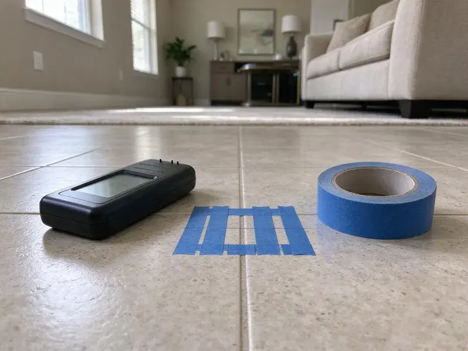

Hydrojet Plumbing in Tanaina, AK
When snaking only pokes a hole in the clog, hydrojetting in Tanaina, AK cleans the pipe wall to wall and restores full flow.
- Same-Day Jetting Available
- Eco-Friendly Methods
- Before and After Camera Video
- Fast Clog Removal

Need Hydrojet Plumbing Service in Tanaina, AK?
Call now to schedule hydrojetting and get a camera inspection of your line at the same visit.
Expert Hydrojet Plumbing in Tanaina, AK for Clear Drains
CKN Plumbing focuses on hydrojet plumbing, a powerful and precise method for clearing the toughest drain and sewer line blockages. Using high-pressure water streams, we reliably remove grease, mineral buildup, tree roots, and other debris that common snaking tools can't touch, ensuring a thorough clean for your Tanaina property.
Our expertise includes:
- Removes tough grease, scale, and root intrusions
- Jetting of kitchen grease lines, main sewers and storm drains
- Camera inspection before and after jetting with saved video

Additional Plumbing Maintenance Services in Tanaina, AK
Our maintenance and specialty plumbing services in Tanaina, AK catch small problems before they become emergencies.


Customers
Why Choose CKN Plumbing for Hydrojet Plumbing in Tanaina, AK?
A cable snake opens a hole through a clog, but buildup on the pipe wall stays behind and catches new debris fast. Hydrojetting removes that buildup so the line stays clear much longer.
- Deep Clean, Hydrojetting cleans the entire pipe wall, removing debris and buildup, unlike snaking which only punches a hole.
- Chemical Free, We use only water, which is safe for your pipes, septic system and the surrounding environment.
- Deep Cleaning, Hydrojetting uses up to 4,000 PSI of water pressure to completely clean the inside walls of your pipes, not just punch a hole through a clog.
Citywide Coverage
CKN Plumbing is focused on serving every neighborhood of Tanaina, ensuring that expert hydrojet plumbing services are always within reach. Whether you're in a historic district or a newer subdivision, we're equipped to handle your toughest plumbing challenges.
Experienced Team
Our technicians at CKN Plumbing are highly trained and experienced in hydrojet plumbing, understanding the details of pipe materials and clog types. They train regularly to stay current with the latest techniques and equipment in the industry.
Safety-First Approach
CKN Plumbing follows strict safety protocols and all relevant plumbing codes for hydrojetting services, so the job is done right and with care. We prioritize the integrity of your plumbing system and the safety of everyone involved.
Trusted Certified Tanaina Plumbing Services Professionals
At CKN Plumbing, we take pride in providing certified plumbing services throughout Tanaina, AK. Backed by leading industry credentials, our experienced plumbers combine technical skill with genuine customer care. Whether it is repair, installation, or maintenance, we follow strict safety and quality standards to deliver lasting results you can trust.
Call Us Now PHCC Plumbing Contractor Recognition
PHCC Plumbing Contractor Recognition Better Business Bureau (BBB) Accreditation
Better Business Bureau (BBB) Accreditation Angi Certified Pro
Angi Certified Pro ISO 9001 Quality Management Certification
ISO 9001 Quality Management CertificationHigh-Performance Hydrojet Plumbing Services in Tanaina, AK
Residential Hydrojetting in Tanaina
CKN Plumbing offers tailored hydrojet plumbing services for homes in Tanaina. We tackle common residential issues like kitchen drain grease buildup, bathroom hair clogs, and laundry line lint accumulation. Our professional equipment is designed to clear these blockages thoroughly, restoring your home's plumbing to full function. We keep the process low impact and highly effective for your specific pipe configuration, considering the typical age and material of homes in the area.

Emergency Hydrojet Services in Tanaina, AK
When you have a complete sewer line backup or a severely clogged main drain in Tanaina, AK, you need fast, effective help. CKN Plumbing offers emergency hydrojet plumbing services to address urgent blockages quickly. Our technicians are ready to deploy high-pressure water jetting to clear the obstruction, restore flow, and prevent further damage or health hazards. Don't wait, call us immediately for rapid response to your plumbing crisis.
Preventative Hydrojet Maintenance in Tanaina
For properties with chronic drain issues or businesses that rely heavily on their plumbing, preventive hydrojet maintenance in Tanaina can save significant money and hassle. Regular hydrojetting clears out slow-forming blockages before they become critical, extending the life of your plumbing system and preventing emergency repairs. We can set up a custom maintenance schedule based on your property's specific needs and usage patterns, ensuring consistent performance.
Commercial and Restaurant Hydrojetting in Tanaina
Restaurants, hotels, apartment complexes and shopping centers rely on drains that handle heavy daily volume. We jet kitchen lines, floor drains and lines to grease interceptors to keep them flowing between pump-outs. Scheduled jetting helps businesses avoid backups during busy hours and stay in good standing with local pretreatment rules. We can work after closing to avoid disruption.
Sewer Camera Inspection Before Hydrojetting in Tanaina
Before performing any hydrojet plumbing in Tanaina, CKN Plumbing typically conducts a thorough sewer camera inspection. This allows us to correctly diagnose the type, location, and severity of the blockage, as well as assess the condition of your pipes. Knowing if there is existing damage like cracks or collapses helps us determine the right pressure and nozzle, ensuring the hydrojetting process is safe and effective, especially for lines under older slabs and foundations.
Storm and Yard Drain Jetting in Tanaina, AK
Yard drains, channel drains and downspout lines fill with sand, silt and leaves between storms. When the rain comes, a blocked line sends water back toward the house. Ice jams on rivers can flood low-lying properties in Alaska, and floodwater can contaminate wells and swamp septic systems. We jet these lines clear before the rainy season or after a big storm. Clean storm lines carry runoff away from foundations the way they were designed to.
Tree Root Removal with Hydrojetting in Tanaina
Tree roots are a common problem for sewer lines in Tanaina, particularly with older homes and mature landscaping. Roots seek out moisture and can infiltrate even tiny cracks, growing into dense masses that cause severe blockages and damage. Our hydrojet plumbing service uses specialized root-cutting nozzles to slice through these tenacious intrusions and wash them away, leaving your sewer line clear. This method is often more effective than traditional augers for thorough root removal.

Hydrojetting vs Snaking Cost Comparison in Tanaina, AK
Snaking a main line usually costs $200 to $450, while residential hydrojetting usually runs $400 to $900 including camera inspection. Commercial lines and long runs can cost $800 to $2,000 or more. Jetting costs more up front, but it often prevents repeat calls that add up over a year. We help you decide which method suits your line and budget.
Hydrojet Plumbing Near Me in Tanaina, AK
If you're searching for dependable hydrojet plumbing near me in Tanaina, look no further than CKN Plumbing. Our local team is equipped with professional hydrojetting equipment to tackle even the most stubborn drain and sewer line blockages. We are committed to providing fast, professional service to every homeowner and business in the area.
CKN Plumbing is your trusted local expert for hydrojet plumbing solutions, offering reliable service across Tanaina, AK. Our proximity ensures that we can respond quickly to your needs, bringing professional equipment and experienced technicians directly to your door.
CKN Plumbing at a Glance
- Licensed and insured plumbers serving Tanaina, AK
- 24/7 emergency service with same-day scheduling
- Clear written estimates, no hidden fees
- 4.9-star rated by 309+ Alaska customers
Tanaina Map
Tanaina Information
- Population
- 8,817
- Area codes
- Local
- Service area
- Tanaina and communities within 40 miles
- Nearby
- North Lakes, Wasilla, South Lakes, Meadow Lakes
Hydrojet plumbing is important for homes in Tanaina, AK, because shifting soil can damage sewer lines and older pipes are prone to root intrusion and mineral buildup. Many homes here have boilers, circulation pumps, and expansion tanks, which call for a plumber familiar with hydronic systems.
Expert Services
Trust our professionals for reliable CKN Plumbing solutions in Tanaina, AK.
Our Specialized Plumbing Services in Tanaina, AK
At CKN Plumbing, we provide a complete range of plumbing services across Tanaina, AK. From leak detection to full system installations, our team ensures fast, precise, and affordable service for both residential and commercial properties. Explore our core services below:


How Our Hydrojet Plumbing Process Works in Tanaina, AK
Our hydrojet plumbing process is designed for maximum efficiency and effectiveness, ensuring a thorough clean for your pipes.
Request a Quote
Call (928) 470-9007 and describe your drain problem and how often it recurs. We schedule a visit and give you jetting pricing up front.
Camera Inspection
We run a camera through the line to check pipe condition and locate the blockage. Then we choose the right nozzle and pressure for your pipe.
Jet and Verify
We jet the line from end to end and flush the debris. A follow-up camera pass shows you the clean pipe before we leave.
Frequently Asked Questions About Hydrojet Plumbing in Tanaina
The cost of hydrojet plumbing in Tanaina, AK can range from $300 to $800 or more, depending on the severity and location of the clog, as well as the length and diameter of the pipe. Factors like accessibility, the presence of tree roots, and whether a prior camera inspection is needed will also affect the final price. We provide transparent, upfront quotes after an assessment.
Key signs you might need hydrojet plumbing include frequently recurring clogs that snaking doesn't fully resolve, multiple slow drains throughout your home, gurgling sounds from drains or toilets, or foul odors coming from your drains. A severe sewer backup is also a clear indicator that hydrojetting is needed to clear the main line.
Yes. Chemicals rarely remove scale or roots and can damage pipes and septic systems. Jetting uses only water and cleans the full pipe diameter.
For most homes, hydrojetting every year or two is sufficient for preventive maintenance, especially in areas with hard water or older plumbing. Businesses, particularly those in food service, may benefit from more frequent cleanings, such as quarterly or every six months, to prevent serious blockages.
Hydrojetting is usually safe for most modern plumbing pipes, including PVC, ABS, and cast iron, when performed by a skilled professional. However, it may not be suitable for severely corroded, cracked, or improperly installed pipes. We always perform a pre-inspection to confirm pipe integrity.
Yes, hydrojet plumbing is very effective at clearing tree roots from sewer lines. We use specialized nozzles designed to cut through even dense root masses. The high-pressure water then flushes the severed roots and other debris out of the pipe, restoring full flow. This is a common and effective solution for many Tanaina homes.
When performed by a trained professional, hydrojetting is generally safe for most types of pipes, including older cast iron or PVC. However, severely damaged, corroded, or fragile pipes might not withstand the high pressure. This is why CKN Plumbing always recommends a pre-service camera inspection to assess pipe integrity before proceeding with hydrojet plumbing.
Jetting removes the roots inside the pipe, but roots will grow back if the joint or crack remains open. Regular jetting can control them for years. Pipe lining or repair is the lasting fix.
What People Are Saying About Our Plumbing Experts?

Mark T.
When our office needed drain cleaning, CKN Plumbing provided quick, reliable service. The plumber arrived on time and made sure every drain flowed perfectly before leaving. Very satisfied.
Drain Cleaning · Fishhook, AK
Robert G.
The trenchless sewer replacement saved our front yard. They walked us through the camera inspection footage first so we knew exactly what we were paying for.
Sewer Line Replacement · Fishhook, AK
Laura S.
I scheduled a water heater replacement, and the team made the process smooth and affordable. The new unit works perfectly, and they cleaned up after completing the job.
Water Heater Replacement · Fishhook, AK
Daniel K.
A pipe burst at 11 pm and they actually answered. The plumber showed up within the hour, shut everything down, and had us back to normal the next morning. Could not ask for more.
Emergency Plumbing · North Lakes, AK
Emily R.
I called CKN Plumbing for plumbing repair, and the technician was fast, polite, and thorough. They explained the problem clearly and fixed it the same day. I will definitely hire them again. Highly recommended!
Plumbing Repair · South Lakes, AKJames P.
Our commercial plumbing system had a leak under the sink, and CKN Plumbing handled it professionally. The plumbers arrived quickly and restored everything without disruption to our customers.
Commercial Plumbing · South Lakes, AK